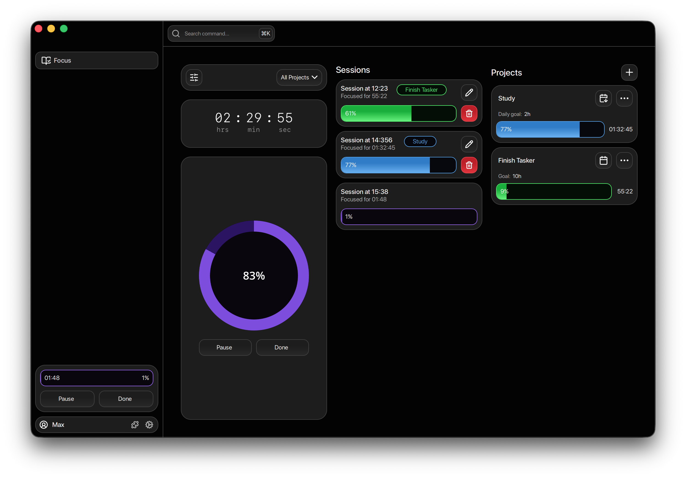
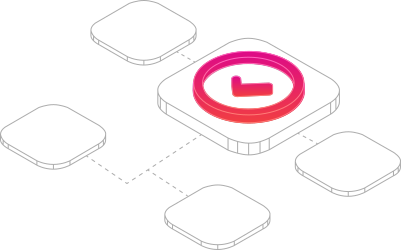

Developer Tools for every version
For every version of Tasker we release we also provide a Developer Kit for that version so you have all the tools you need to create plugins for the specific build you want.
View releasesTasker is a fully plugin-powered productivity platform, designed to conform to your specific needs and elevate your workflow. Fully Open Source

FEAT_1
Tasker’s features are powered by plugins, so you can install only the ones that suit your unique workflow. No bloatware. No workarounds. Pure productivity.
Learn more
FEAT_2
Take your productivity to the next level with features like the Command Bar or Events. Easy to use. Powerful in action.
Learn about themFEAT_3
Tasker’s interface is powered by Rose Garden, our beautiful UI library that perfectly complements the app and integrates tightly with plugins.
Meet Rose GardenFEAT_4
Every aspect of our app can be controlled with your keyboard. No need for a mouse.
Learn the shortcutsTasker is a constantly evolving piece of software and we are always shipping updates for it. We have a full timeline of upcoming features, have a look:
We provide developers with all the tools they might need to create the wonderful plugins that power Tasker. Here is some of that:
For every version of Tasker we release we also provide a Developer Kit for that version so you have all the tools you need to create plugins for the specific build you want.
View releasesWe have full documentation available, with details on how to interact with Tasker’s API, along with guides to get you started with creating plugins.
Read DocsWe saved the best for last. Tasker is fully open source and free forever. That means you can view its code and contribute in the development of future versions.
View SourceTasker will always be free, doesn’t hurt to try it. We are sure you’ll love it ;)
Download